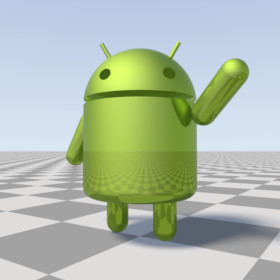

{kind=link}

A library module from the Persistence of Vision Ray Tracer (POV-Ray) Object Collection.
A 3-D model of Google’s Android™ robot.
| Key Files | |
|---|---|
| File | Description |
androidrobot.html | The user manual (this document) |
androidrobot.inc | The AndroidRobot software |
androidrobot.jpgandroidrobot_posed.jpg |
Sample output |
androidrobot.povandroidrobot_posed.pov |
Demo scene files |
READMEnnnnnn.html |
Important information that you need to know |
| Other Files | |
| File | Description |
androidrobot.css | A support file for the user manual |
androidrobot_cc-lgpl.png | A support file for the user manual |
androidrobot_description.txt | A brief description of AndroidRobot |
androidrobot_keywords.txt | A list of keywords |
androidrobot_prereqs.txt | Prerequisites (empty file) |
androidrobot_thumbnail.png | Sample output |
cc-LGPL-a.png | Administrative support file |
Versionnnnnnn.js |
Administrative support file |
Note: The file droid.pov is not used in this version.
assumed_gamma in global_settings{} prior to the next step.
#include "androidrobot.inc"Including the file more than once is harmless, though unnecessary.
Requires POV-Ray version 3.5 or later.
All file names, global identifiers, and local identifiers comply with the
Object Collection revised naming standards. The prefix for this
module is “androidrobot,” including any uppercase and lowercase variations.
An untextured robot. The robot faces the x-direction and the
bottom of the robot is at ANDROIDROBOT_V_BASE.
Argument:
Use_merge:
yes, the robot will be composed using CSG merge.
If no, then CSG union will be used. In general, pass
yes if the object is to be transparent, no otherwise.
An untextured posable robot.

See file androidrobot_posed.pov for an example of how to use this.
Arguments:
Use_merge:
yes, the robot will be composed using CSG merge.
If no, then CSG union will be used. In general, pass
yes if the object is to be transparent, no otherwise.
x_Head:
x_Left_arm:
x_Right_arm:
x_Left_leg:
x_Right_leg:
| Identifier | Type | Description |
|---|---|---|
ANDROIDROBOT_V_BASE |
3-D vector | The location of the bottom of the unposed robot |
ANDROIDROBOT_C_RAWCOLOR |
color | The official Android color |
ANDROIDROBOT_C_COLOR |
color | The official Android color, gamma-adjusted to sRGB (POV-Ray 3.7) or 2.2 (earlier versions of POV-Ray).
Use this if you have set |
| Version | Date | Notes |
|---|---|---|
| 1.0 | October 30, 2009 | Software is created by Karl Ostmo. |
| 2.0 | July 23, 2011 | Software is made namespace compliant and more flexible. |
| 2.1 | June 26, 2012 | Non-gamma-adjusted official color is added.
Demo files are reverted to POV-Ray 3.5. |
| 2.1a | June 28, 2012 | Correction is made to Google license statement. |
{kind=link}